BUCATO CON VERDE PIU'
Bucato: Oggi nel blog abbiamo il piacere di ospitare un prodotto d'eccellenza. Un'azienda davvero di qualità ovvero VERDE PIÙ .
È una linea completa per il bucato e la pulizia della casa. Sono detersivi che aiutano la salute e l'ambiente in quanto sono ecologici.
La particolarità di questi detersivi sfusi è che possiamo trovarli solo nelle farmacie più fidate. Sì, proprio in farmacia e compri solo ciò che ti serve, senza sprechi essendo un detersivo sfuso.
Un detersivo non dev'essere solo profumato o che pulisci in superficie, ma un buon detersivo dev'essere capace di pulire in profondità, che ci protegge da batteri e deve anche igienizzare, ed infine se riusciamo ad avere anche una buona profumazione è ancora meglio.
Trovare prodotti naturali e, in questo caso che rispettino anche l'ambiente è stata davvero una bella sorpresa.
La linea verde più contiene ingredienti vegetali che permettono di sgrassare, smacchiare e pulire in modo naturale e senza additivi chimici. All'inizio ero scettica perché siamo abituati a grandi marche, con pubblicità che ci bombardano la mente influenzando anche il nostro giudizio. Ma con i verde più ho dovuto ricredermi perché ha soddisfatto tutte le mie aspettative.
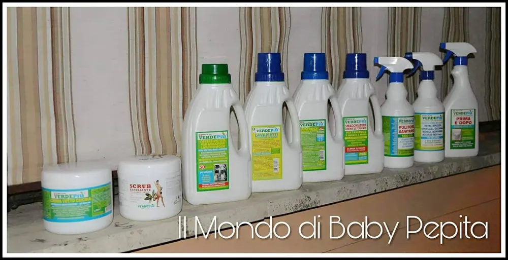
Ciò che ho provato è stata tutta la linea che l'azienda ci offre, ovvero:
• crema tutto cucina multifunzione ph neutro. • lavapiatti stoviglie a mano detersivo concentrato. • pulitore sanitario. • prima e dopo. • detersivo gel per macchine lavastoviglie. • eco-pulitore neutro multiuso vetri specchi. • eco-detersivo lavatrice e bucato a mano ultra-concentrato con sgrassatore, smacchiatore e ammorbidente. • smacchiatore crema detergente additivo lavatrice. • scrub esfoliante viso e corpo - unisex.
CREMA TUTTO CUCINA MULTIFUNZIONE PH NEUTRO.
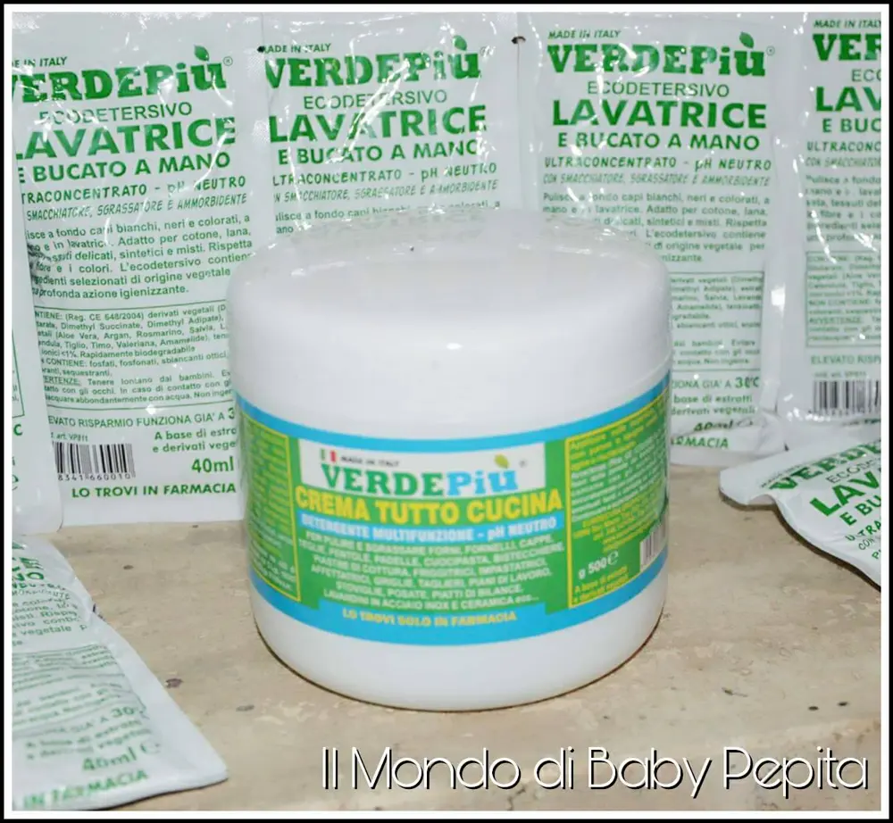
È una crema che elimina lo sporco e le macchie da tutte le superfici, ottimo per la cucina in quanto rimuove incrostazioni di grasso, oli, ma anche macchie di vernice, inchiostro, ecc. Insomma è un rimedio facile e veloce per le incrostazioni più profonde.
È indicato anche per pulire forni, fornelli, cappe, teglie, pentole, padelle, bistecchiere, piastre di cottura, friggitrici, griglie, taglieri, piani di lavoro (in acciaio inox, alluminio, teflon, legno, ecc), lavandini in inox ed anche ceramica, rubinetteria, pavimenti, utensili, pelle, ecc ecc. Elimina tutti gli odori di cucina (cipolla, aglio, pesce, fritto ecc).
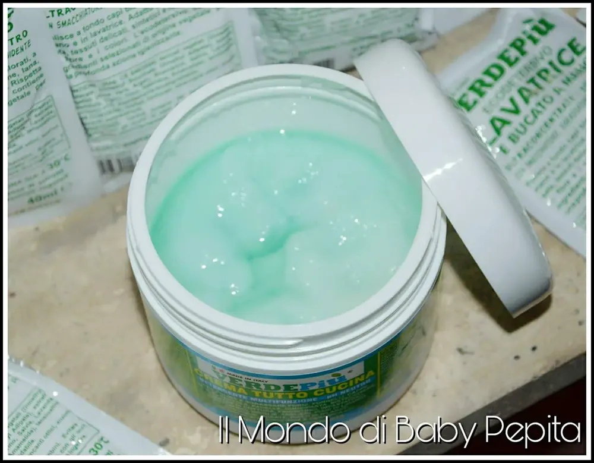
Istruzioni per l'uso: Applicare il prodotto sullo sporco o sulla macchia direttamente, frizionare con panno o spugna, risciacquare la superficie e asciugare. Differente invece, se si vuole usare per stoviglie incrostate, in questo caso mettere un pò di prodotto sulla superficie, lasciare agire per un pò di tempo, strofinare con una spugna umida e poi riacquistare.
Ingredienti: Derivati vegetali (dimethyl glutarate, dimethyl succinate, dimethyl adipate), estratti vegetali (aloe vera, Argan, rosmarino, salvia, lavanda, calendula, tiglio, timo, valeriana, amamelide), sale purissimo, tensioattivi non ionici 5%. Non contiene: fosfati, fosfonati, sbiancanti ottici, enzimi, sequestranti.
LAVAPIATTI STOVIGLIE A MANO DETERSIVO CONCENTRATO.
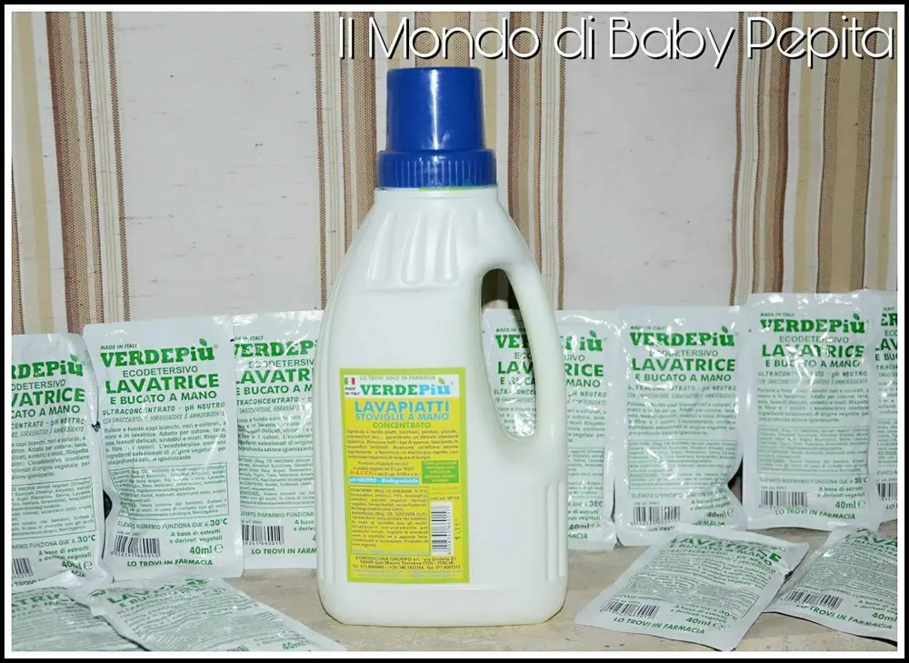
Il lavapiatti stoviglie come c'è scritto nel nome, ha un ph neutro con estratti e derivati vegetali in grado di ottimizzare le funzionalità di questo prodotto. È stato studiato apposta per sgrassare con facilità e lucidare le stoviglie a mano.
Un vero alleato per le incrostazioni di ogni genere.
Ingredienti: Tensioattivi anionici 5-15%, tensioattivi anfoteri 5%, estratti e derivati vegetali. Non contiene: fosfati, fosfonati, enzimi, sequestranti.
PULITORE SANITARIO.
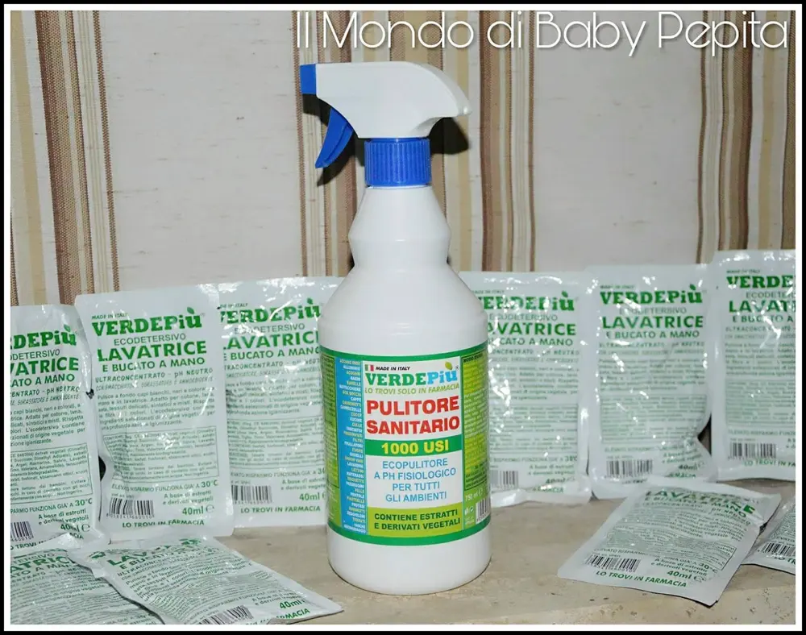
È una miscela armonizzata composta principalmente da estratti vegetali in base acquosa.
È in grado di pulire, smacchiare e sgrassare anche metalli sensibili come alluminio e leghe leggere, materiali anche come carrozzelle, stampelle, treppiedi ecc.
Perfetto anche per pulire a fondo oggetti e strumenti dedicati all'infanzia (culle, fasciatoio, passeggini, sedili per auto); ma anche oggetti per animali domestici (cucce, gabbietta, vaschette, trasportini).
Ovviamente adatto anche in cucina per pulire e sgrassare o anche lucidare cappe, bistecchiere, pentole, teglie, padelle, vassoi, utensili da cucina ecc. Ottimo per le superfici del bagno in quanto previene il calcare e le incrostazioni eliminando anche gli odori sgradevoli.
Insomma un vero rimedio contro tutta la polvere e incrostazioni che ci circondano.
PRIMA E DOPO.
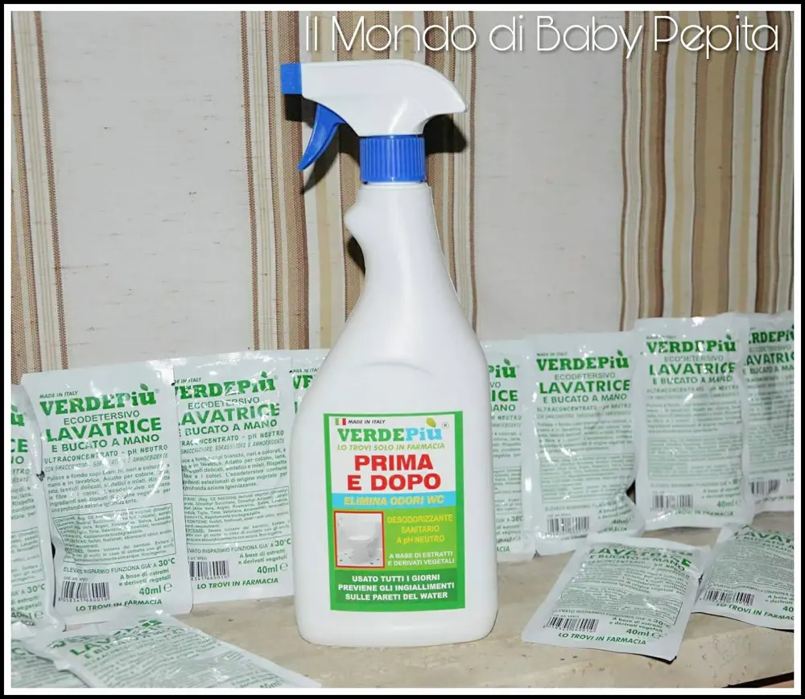
Prima e dopo elimina odori di wc, realizzato per essere un elemento insostituibile nelle toilette pubbliche e private. È un prodotto che consente di desodorizzare e di prevenire la formazione di calcare e delle macchie gialle antigieniche e antiestetiche. Usato tutti i giorni previene gli ingiallimenti sulle pareti del water. Poi ha un odore buonissimo.
DETERSIVO GEL PER MACCHINE LAVASTOVIGLIE.
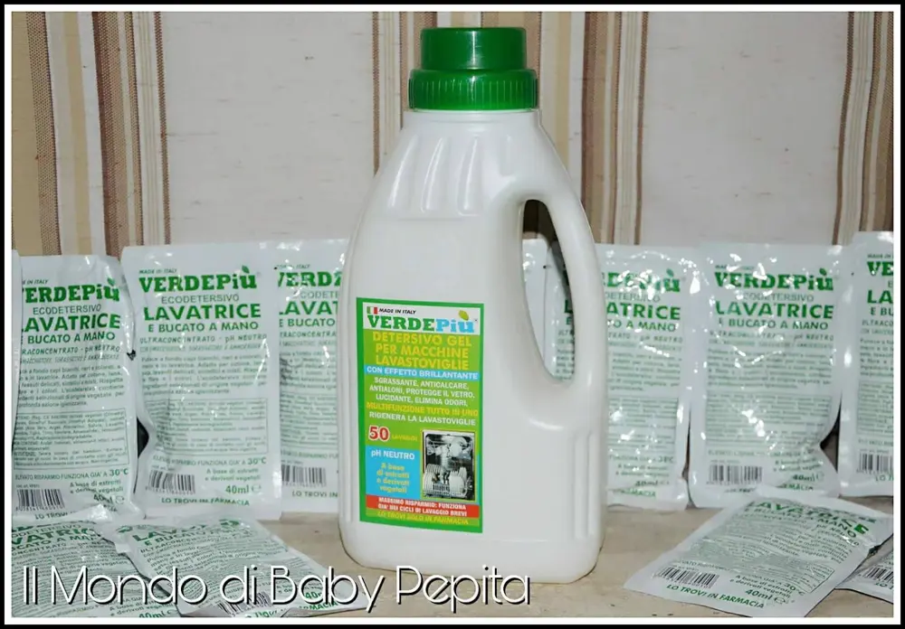
Un detersivo multifunzione 'tutto in uno' a ph neutro, è stato realizzato con estratti vegetali e derivati vegetali in un'esclusiva composizione in gel.
È indicato per rimuovere lo sporco ed eliminare gli odori come cipolla, aglio, pesce, grasso, carne, frutto, ecc.
La sua azione brillantante protegge le stoviglie da aloni ed opacità. Funziona già nei cicli di lavaggio brevi e alle basse temperature, riducendo così il consumo di acqua ed energia.
Questo gel svolge un'azione di anticalcare e rigenera la lavastoviglie donando una piacevole e costante freschezza.
Istruzioni per l'uso: Per ogni lavaggio in lavastoviglie mettere 20 grammi nella vaschetta disattiva e procedere con il lavaggio desiderato. Si possono effettuare fino a 50 lavaggi.
Un detersivo ideale anche prima di usare la lavastoviglie.
ECO-PULITORE NEUTRO MULTIUSO VETRI SPECCHI.
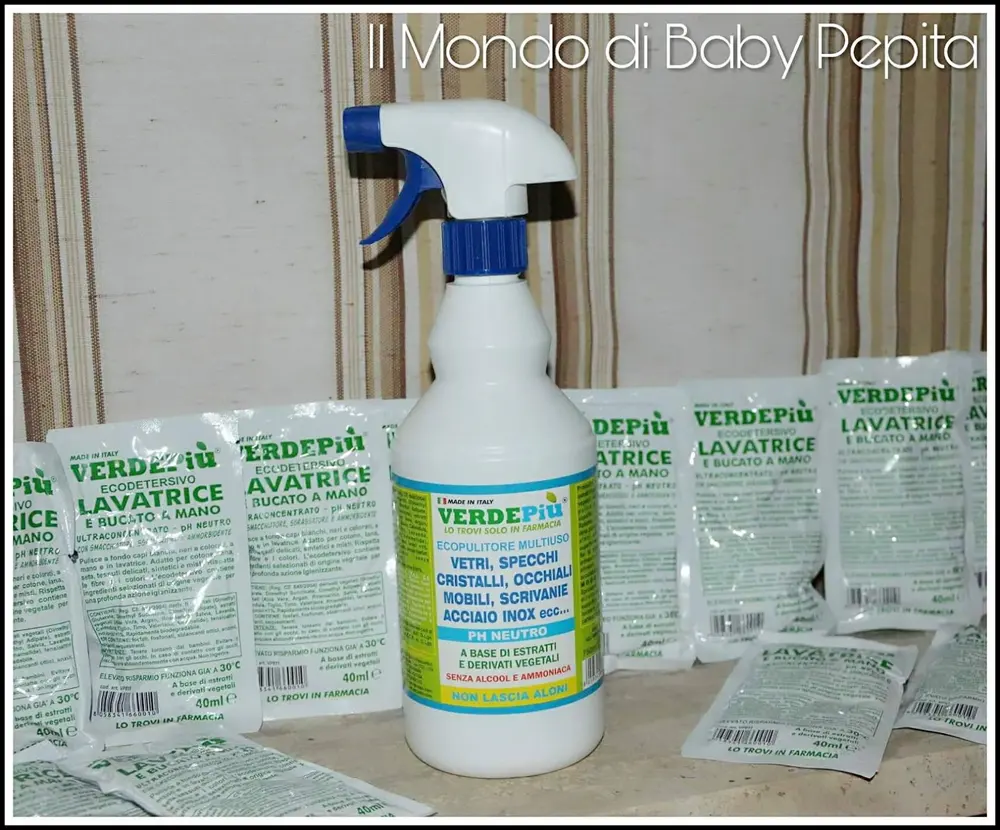
Come già dal titolo l'eco-pulitore multiuso è un prodotto realizzato per pulire e lucidare vetri, specchi, cristalli, occhiali, mobili, scrivanie,acciaio inox e tante altre superfici che brillano. Non contiene alcool e ammoniaca, è priva di conservanti, sequestranti ed enzimi.
Questo perché lo dico? Perché ci fa capire che ci consente di poter contare su un prodotto efficace, gradevole e sicuro, un prodotto che può essere usato tutti i giorni per migliorare la qualità e la pulizia degli ambienti in cui viviamo.
Non lascia assolutamente aloni anche sulle superfici esposte al sole. Istruzioni per l'uso: Spruzzare il prodotto direttamente sulle superfici da pulire, asciugare con carta o panno. Se la superficie deve entrare a contatto con gli alimenti, risciacquare accuratamente.
ECO-DETERSIVO LAVATRICE E BUCATO A MANO ULTRA-CONCENTRATO CON SGRASSATORE, SMACCHIATORE E AMMORBIDENTE.
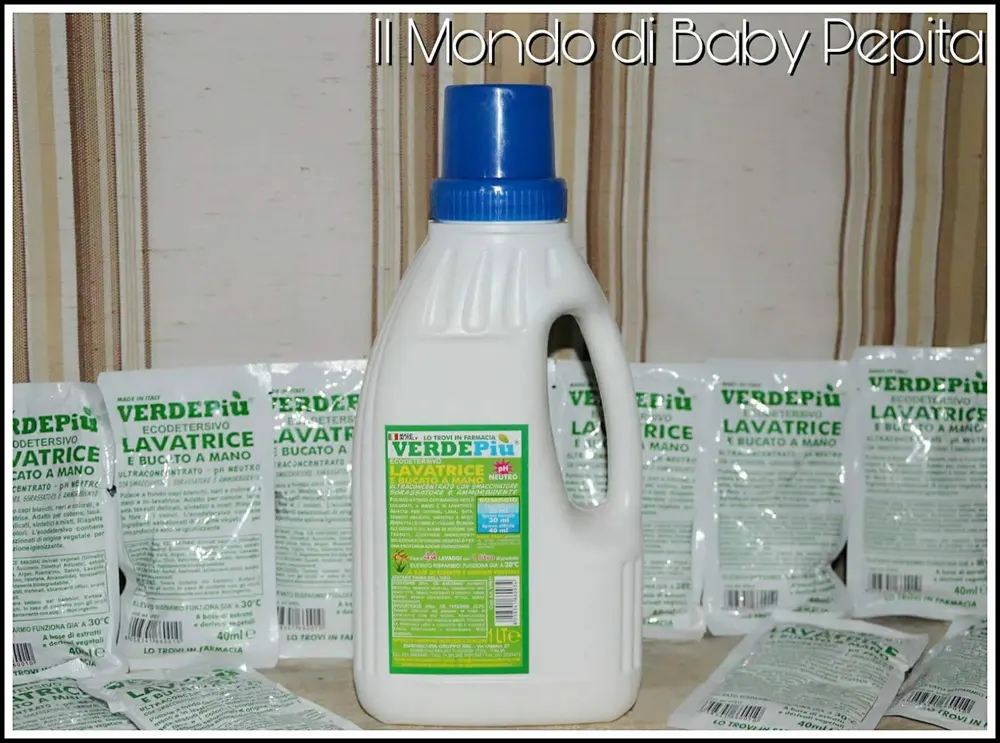
Lava capi bianchi, neri e colorati donando una fresca sensazione di pulito ai tessuti che dura nel tempo.
La formula con ammorbidente, sgrassatore e smacchiatore rispetta e rinnova le fibre e i colori. Cioè può esistere un prodotto più efficace di questo? Io credo di no. Tutto in uno, ammorbidente, sgrassatore e smacchiante, oltre ad essere profumato e rispetta anche il tessuto. Per non parlare che è un prodotto ecologico e quindi rispetta anche l'ambiente.
Elimina gli odori tipici della sudorazione da tute, magliette, camicie ecc. Utilizzabile in ogni lavatrice domestica che industriale e ovviamente anche per bucato a mano.
Istruzioni per l'uso: Dosi consigliate per lavatrice: Poco sporco: 20 ml Sporco normale: 30 ml Sporco difficile: 40 ml (un tappo) Inoltre; per avere un bucato ancora più morbidi e profumato, si consiglia di versare anche mezzo tappo (20 ml) nella vaschetta dell'ammorbidente.
Bucato a mano: Versare mezzo tappo (20 ml) di prodotto ogni 3 litri d'acqua. Immergere o capi, lasciarli in ammollo anche tutta la notte.
Ma la cosa più bella che c'è da sapere è che questo prodotto non è solo indicato per il bucato, ma può fare tanto altro, praticamente tutto.
Sì, è possibile usare questo detersivo anche per lavare pavimenti, parquet, ceramica, marmo, per pulire moquette, materassi, cappotti, per lucidare fornelli. Insomma è un vero concentrato di pulito questo prodotto.
Il flacone può essere tranquillamente riutilizzato. Davvero un maxi risparmio sia economico che per l'ambiente.
SMACCHIATORE CREMA DETERGENTE ADDITIVO LAVATRICE.
È una crema piacevole al tatto e concreta sullo sporco.
È realizzato con estratti vegetali e derivati vegetali, amalgamati con tecnologia salina proveniente dal cuore delle montagne nobili dell'Austria situata sulla Via del Sole, luoghi suggestivi in cui la natura e saggezza convivono da oltre 7000 anni.
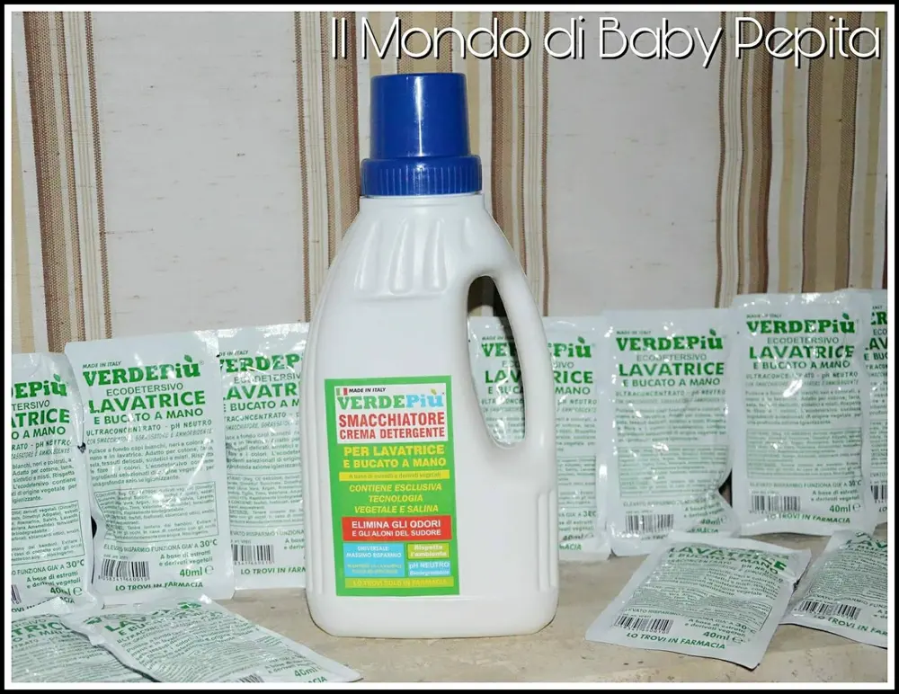
Pratico ed economico, elimina sporco e macchie senza pretattare. Elimina gli odori e gli aloni di sudore dai tessuti. È indicato per capi bianchi, neri e colorati. Per avere un bucato ancora più pulito, morbido e profumato, utilizzare questo prodotto insieme all'ecodetersivo lavatrice ultraconcentrato verde più. Si possono effettuare 100 lavaggi.
Istruzioni per l'uso: Dosaggio consigliato: Aggiungete 5-10 grammi di prodotto nella vaschetta del detersivo della lavatrice e procedere con il lavaggio. Non è necessario pretattare le macchie.
Bucato a mano: mettere un tappo di prodotto nella bacinella per ogni 3 litri d'acqua. Lasciare i capi in ammollo anche tutta la notte.
È ottimo per rimuovere ogni tipo di macchia dalla A alla Z.
Inutile dirvi che mia madre ne è rimasta innamorata di questi prodotti. In casa si sente ancor di più quel profumo di pulito che emana freschezza.
Un profumo che già appena varchi la porta lo senti e dura per giorni.Sono prodotti validi in tutto, danno una resa massima per poco prodotto; fantastici. Non fanno molta schiuma il che è anche economico, in quanto non bisogna fare troppi risciacqui per eliminare tutta la schiuma in eccesso ed in più non lascia aloni.
Oltre la pulizia del bucato e della casa, l'azienda mi ha anche inviato uno scrub per il corpo.
SCRUB ESFOLIANTE VISO E CORPO - UNISEX.
È uno scrub tutto nuova, infatti non lo troviamo ancora sul sito Verde Più.
È un ottimo rimedio per eliminare le cellule morte che si depositano sulla superficie della pelle del viso ma anche del corpo.
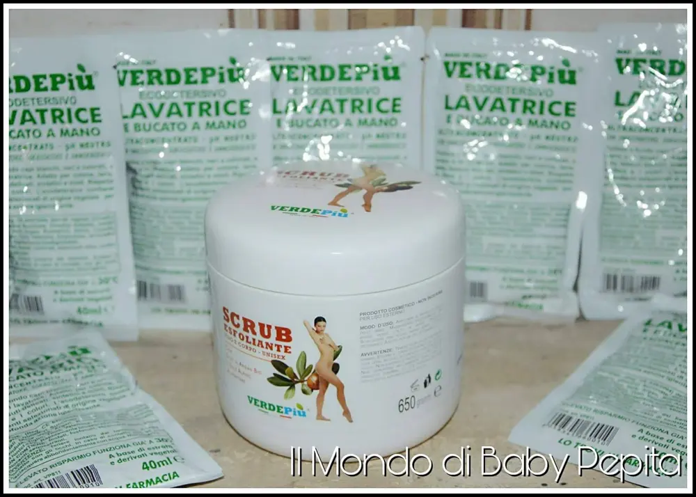
Contiene olio di Argan bio e sale alpino alimentare.
Ideale sia per uomo che per donna, per pelli miste ed impure, che appare su fronte, mento e naso una platina lucida, ciò significa che c'è una sovrapproduzione di sebo.
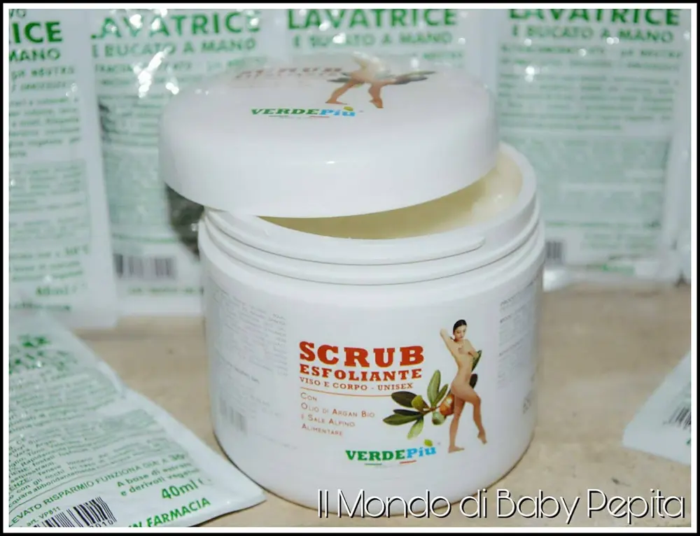
Lo scrub ci permette di pulire in profondità la pelle rigenerandola, donando un aspetto più morbido e rilassato.

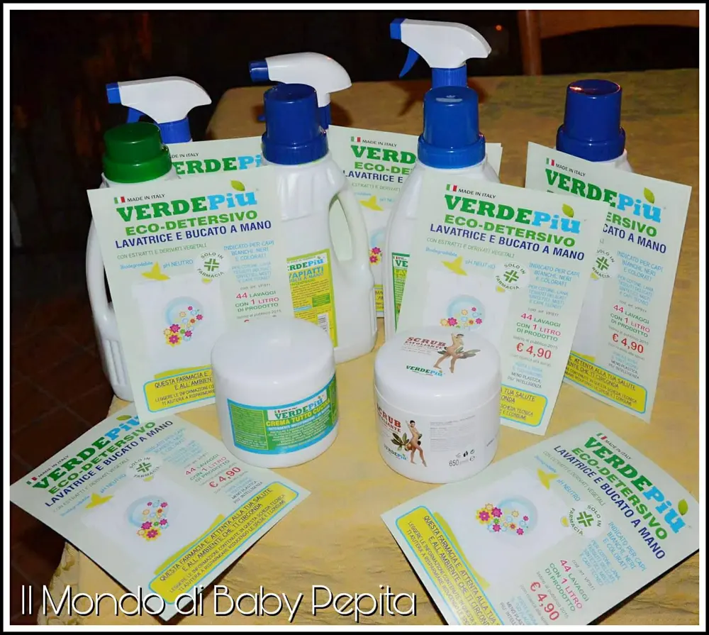
È possibile dal sito individuare la farmacia più vicina dove acquistare i prodotti sfusi di Verde Più.